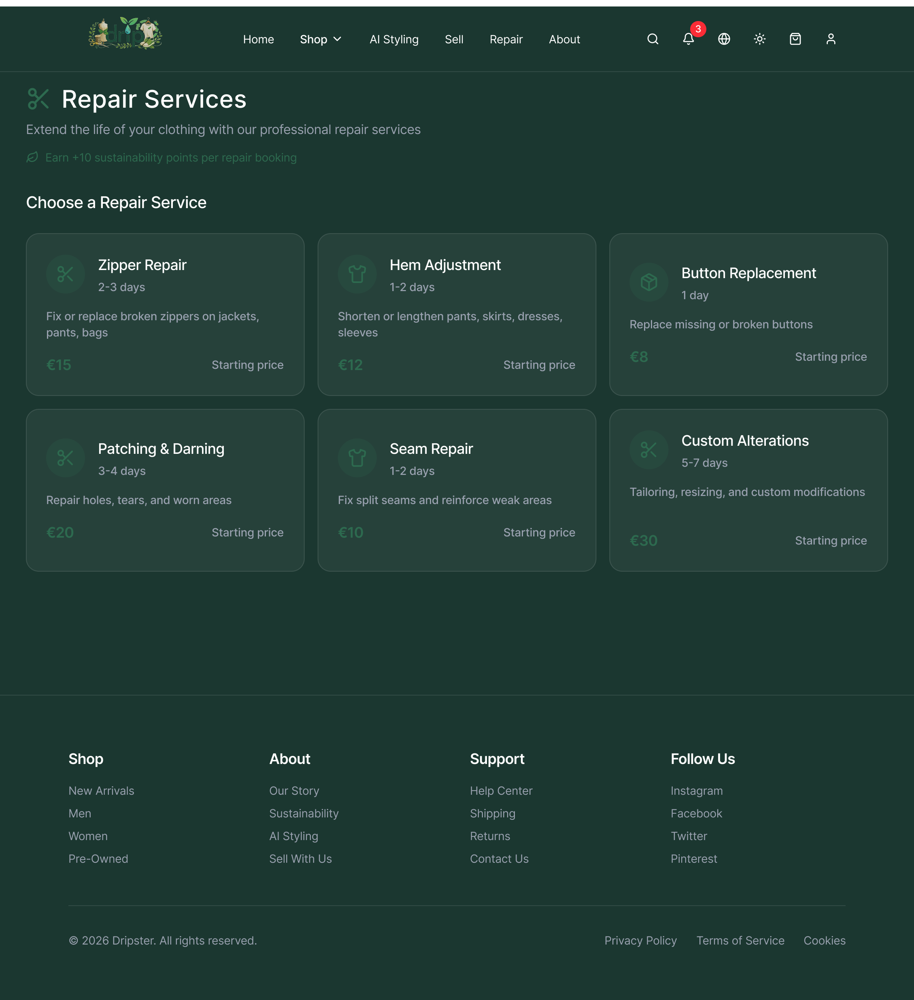
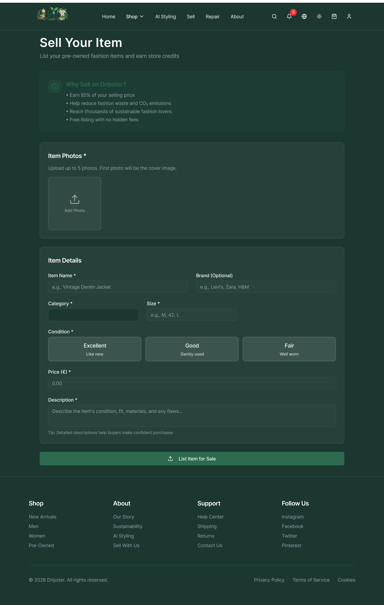

02Drip · Circular fashion concept
Designing repair and resale into fashion retail
A service-design concept that connects shopping, product transparency, repair and resale.
A circular fashion concept that gives budget-conscious shoppers practical reasons to check product information, repair items and resell clothes.
- My role
- Research and persona lead, Figma co-lead
- Team delivery
- 5 core screens in a high-fidelity service concept
- Evidence
- Research-informed prototype and proposed usability checks

Drip sustainability profile. A high-fidelity service concept, not a launched retail platform.
01 / The problem
Make the useful choice the sustainable one
The brief asked our team to help a fast-fashion retailer explore circular services without abandoning its business model. Research pointed toward a practical tension: people value sustainability, but price, fit and convenience still shape the buying decision.
We designed around that tension instead of assuming more environmental messaging would change behaviour.
02 / My contribution
Research that changed the brief
- Research leadership. Led research into clothing behaviour and fashion waste during a 12-week sprint.
- Persona development. Created Mary, a budget-conscious student whose impulse purchases helped focus the design on useful rewards and post-purchase options.
- QR product passport. Championed a scannable product-information concept as a way to make material and origin claims more inspectable.
- Figma co-leadership. Co-led the progression from independent sketches through a high-fidelity interactive prototype across five core screens.
03 / Solution structure
A garment has more than one chapter
The concept connects a QR-based product passport with a wardrobe view, repair services, resale and rewards. A visible sustainability profile makes participation legible, while Eco Points and store credit give users a practical reason to return.
These are designed product flows. The prototype does not establish a production QR verification service, a working AI styling engine, or measured environmental savings.
Inside the prototype
Give people a reason to keep clothes in use
-
01 / Understand the item
Put product details within reach
I proposed a scannable product passport so shoppers could inspect material and origin claims at the point of interest. A comprehension test would show which details shoppers can find and interpret.
-
02 / Keep it in use
Make repair a concrete option
The repair screen turns a broad sustainability message into a choice of services. I would test whether a shopper can identify the right service and understand the next step.

Open the full screen -
03 / Pass it on
Explain what resale could return
Condition and earnings information help shoppers weigh whether listing an item is worth the effort. The open question is how much information they need before starting.

Open the full screen


04 / Outcome & learning
Prototype the service.
Then test the hardest moment.
The team delivered a high-fidelity interactive concept. My strongest learning was to design around the person who is not already convinced: affordability, trust and convenience need a place in the experience.
I would next test the repair-booking flow and product-information comprehension with users. I would also define a survey analysis framework before collecting responses, and map specific service moments rather than relying on a broad journey map.